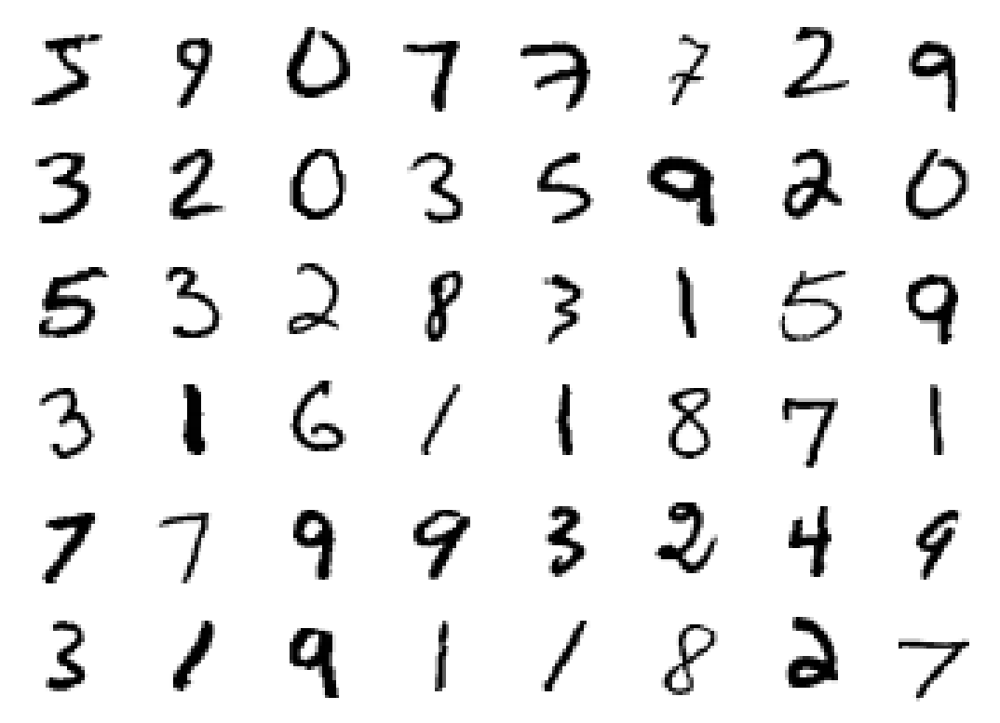
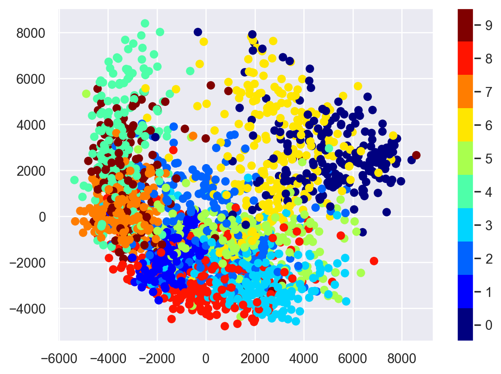
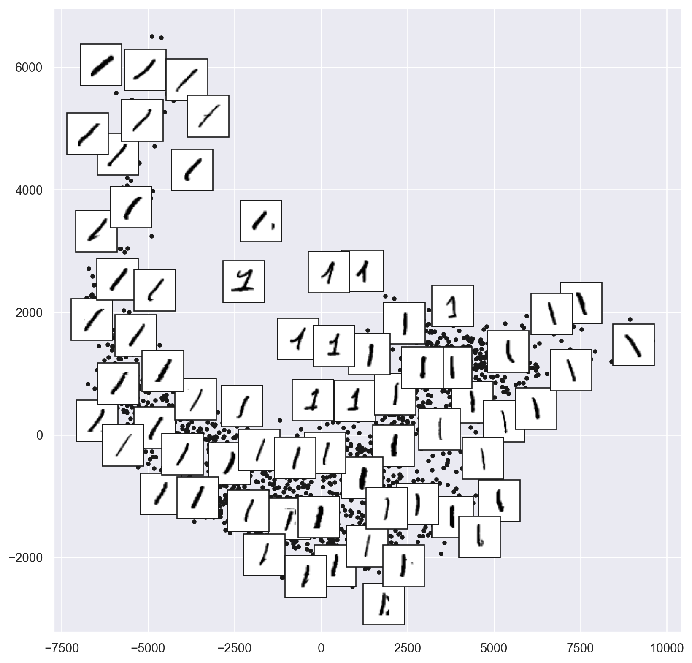
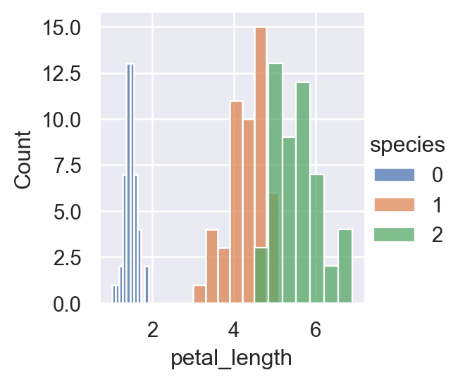
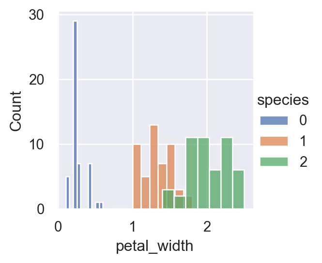
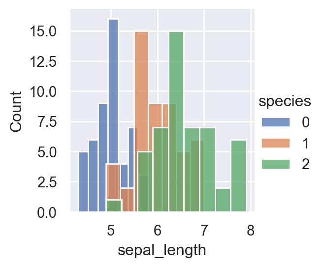
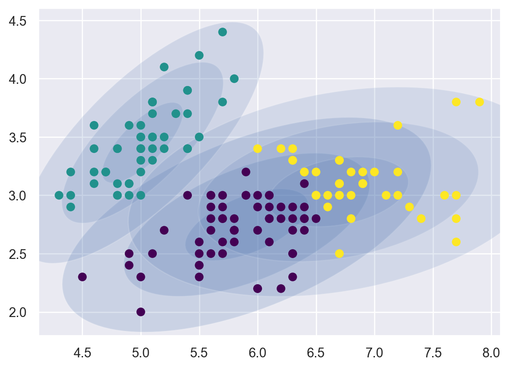

%matplotlib inline
import matplotlib.pyplot as plt
import seaborn as sns; sns.set()
import numpy as np
import pandas as pd11 Unsupervised Learning
Unsupervised learning methods are for problems where there is no known labels (outcome variable).
11.1 Principal Component Analysis
Principal component analysis (PCA) originated as a dimensionality reduction algorithm which transforms a large set of variables into a smaller one that still contains most of the information in the large set. It can also be useful as a tool for visualization, for noise filtering, for feature extraction and engineering, and much more.
11.1.1 Introduction
PCA can be thought of as fitting an ellipsoid to the data, where each axis of the ellipsoid represents a principal component. If some axis of the ellipsoid is small, then the variance along that axis is also small. More formally, PCA is defined as an orthogonal linear transformation that transforms the data to a new coordinate system such that the greatest variance by some scalar projection of the data comes to lie on the first coordinate, called the first principal component (PC), the second greatest variance on the second coordinate, and so on.
See further notes from VanderPlas (2016).
11.2 Manifold Learning
Manifold learning is a class of unsupervised estimators that seeks to describe datasets as low-dimensional manifolds embedded in high-dimensional spaces. It refers to various related techniques that aim to project high-dimensional data onto lower-dimensional latent manifolds, with the goal of either visualizing the data in the low-dimensional space, or learning the mapping. It can be viewed as a nonlinear generalization of dimension reduction.
11.3 Multidimensional Scaling
- Fails at nonlinear embeddings
11.4 Loal linear manifold
11.5 Isometric mapping
Use the Labeled Faces in the Wild dataset.
from sklearn.datasets import fetch_openml
mnist = fetch_openml('mnist_784')
mnist.data.shape/usr/local/lib/python3.11/site-packages/sklearn/datasets/_openml.py:932: FutureWarning: The default value of `parser` will change from `'liac-arff'` to `'auto'` in 1.4. You can set `parser='auto'` to silence this warning. Therefore, an `ImportError` will be raised from 1.4 if the dataset is dense and pandas is not installed. Note that the pandas parser may return different data types. See the Notes Section in fetch_openml's API doc for details.
warn((70000, 784)Plot 48 of them.
mnist_data = np.array(mnist.data) # convert from dataframe to array
fig, ax = plt.subplots(6, 8, subplot_kw=dict(xticks=[], yticks=[]))
for i, axi in enumerate(ax.flat):
axi.imshow(mnist_data[1250 * i].reshape(28, 28), cmap='gray_r')
Let’s take a subset (1/30) of the data, which is about ~2000 points, for a quick exploration.
from sklearn.manifold import Isomap
# use only 1/30 of the data: full dataset takes a long time!
data = mnist.data[::30]
target = pd.to_numeric(mnist.target[::30])
model = Isomap(n_components=2)
proj = model.fit_transform(data)
plt.scatter(proj[:, 0], proj[:, 1], c=target, cmap=plt.cm.get_cmap('jet', 10))
plt.colorbar(ticks=range(10))
plt.clim(-0.5, 9.5);
Define the plot_components function.
from matplotlib import offsetbox
def plot_components(data, model, images=None, ax=None,
thumb_frac=0.05, cmap='gray'):
ax = ax or plt.gca()
proj = model.fit_transform(data)
ax.plot(proj[:, 0], proj[:, 1], '.k')
if images is not None:
min_dist_2 = (thumb_frac * max(proj.max(0) - proj.min(0))) ** 2
shown_images = np.array([2 * proj.max(0)])
for i in range(data.shape[0]):
dist = np.sum((proj[i] - shown_images) ** 2, 1)
if np.min(dist) < min_dist_2:
# don't show points that are too close
continue
shown_images = np.vstack([shown_images, proj[i]])
imagebox = offsetbox.AnnotationBbox(
offsetbox.OffsetImage(images[i], cmap=cmap),
proj[i])
ax.add_artist(imagebox)Just look at one of the digits:
# Choose 1/4 of the "1" digits to project
data = np.array(mnist.data[mnist.target == "1"][::4])
fig, ax = plt.subplots(figsize=(10, 10))
model = Isomap(n_neighbors=5, n_components=2, eigen_solver='dense')
plot_components(data, model, images=data.reshape((-1, 28, 28)),
ax=ax, thumb_frac=0.05, cmap='gray_r')
11.6 Gaussian Mixture Models
The Gaussian Mixture Models (GMM) can be viewed as an extension of K-means. Instead of using a hard clustering method to assign each data point to one and only one cluster, the Gaussian Mixture Models estimates the probability of a data point coming from each cluster.
11.6.1 Mathematics
Suppose that we have \(N\) observations with \(D\) dimensions. The model is a mixture of \(K\) different Gaussian distributions, each with its own mean \(\boldsymbol{\mu}_k\) and variance \(\boldsymbol{\Sigma}_k\) such that within each cluster, the probability of observing \(\boldsymbol{x}_i\) is
\[\begin{equation*} N( \boldsymbol{x}_i|\boldsymbol{\mu}_k, \boldsymbol{\Sigma}_k)= \frac{1}{(2\pi)^{D/2}|\boldsymbol{\Sigma}_k|^{1/2}} \left( -\frac{1}{2}(\boldsymbol{x}_i-\boldsymbol{\mu}_k)^T(\boldsymbol{\Sigma}_k)^{-1} (\boldsymbol{x}_i-\boldsymbol{\mu}_k) \right). \end{equation*}\]
We define a latent variable \(\boldsymbol{z}=(z_{1},z_{2},\dots z_{K})\), where \(z_{k}\) is 1 if a data point of interest comes from Gaussian \(k\), and 0 otherwise. Now the overall probability of observing a point that comes from Gaussian \(k\) is
\[\begin{equation*} P(z_{k}=1) = \pi_k. \end{equation*}\]
Thus, each Gaussian in the model will have the following parameters: \(\pi_k\), \(\boldsymbol{\mu}_k\), \(\boldsymbol{\Sigma}_k\).
11.6.2 Expectation - Maximization Algorithm (EM)
- Initialize \(\theta=(\pi_k, \boldsymbol{\mu}_k, \boldsymbol{\Sigma}_k)\) randomly
- Alternate:
- E-step: based on \(\theta\), calculate the expectation of log-likelihood and estimate \(\gamma(z_{ik})\), the poterior probability that observation \(\boldsymbol{x}_i\) comes from Gaussian \(k\)
- M-step: update \(\theta\) by maximizing the expectation of log-likelihood based on \(\gamma(z_{ik})\)
- When the algorithm converges or when
iter = max_iter, terminate.
For more details about mathematics and the EM algorithm: https://towardsdatascience.com/gaussian-mixture-models-explained-6986aaf5a95, https://towardsdatascience.com/gaussian-mixture-models-vs-k-means-which-one-to-choose-62f2736025f0.
11.6.3 Implementation
GMM can also be implemented by importing the scikit-learn package.
11.6.4 Iris data
import pandas as pd
import numpy as np
import matplotlib.pyplot as plt
import seaborn as sns
from sklearn import datasetsiris_data = datasets.load_iris()
iris = pd.DataFrame(iris_data.data,columns=["sepal_length","sepal_width","petal_length","petal_width"])
iris['species'] = pd.Series(iris_data.target)
iris.info()<class 'pandas.core.frame.DataFrame'>
RangeIndex: 150 entries, 0 to 149
Data columns (total 5 columns):
# Column Non-Null Count Dtype
--- ------ -------------- -----
0 sepal_length 150 non-null float64
1 sepal_width 150 non-null float64
2 petal_length 150 non-null float64
3 petal_width 150 non-null float64
4 species 150 non-null int64
dtypes: float64(4), int64(1)
memory usage: 6.0 KBsns.FacetGrid(iris,hue="species", height=3).map(sns.histplot,"petal_length").add_legend()
sns.FacetGrid(iris,hue="species", height=3).map(sns.histplot,"petal_width").add_legend()
sns.FacetGrid(iris,hue="species", height=3).map(sns.histplot,"sepal_length").add_legend()
plt.show()


For a more concise visualization later, we just select sepal_length and sepal_width as the input variables.
X = iris.iloc[:, [0, 1]].values
y = iris.iloc[:, 4]Train the GMM:
from sklearn.mixture import GaussianMixture
GMM = GaussianMixture(n_components = 3)
GMM.fit(X)GaussianMixture(n_components=3)In a Jupyter environment, please rerun this cell to show the HTML representation or trust the notebook.
On GitHub, the HTML representation is unable to render, please try loading this page with nbviewer.org.
GaussianMixture(n_components=3)
We can plot the Gaussians by using a plot_gmm function defined on https://jakevdp.github.io/PythonDataScienceHandbook/05.12-gaussian-mixtures.html.
from matplotlib.patches import Ellipse
def draw_ellipse(position, covariance, ax=None, **kwargs):
"""Draw an ellipse with a given position and covariance"""
ax = ax or plt.gca()
# Convert covariance to principal axes
if covariance.shape == (2, 2):
U, s, Vt = np.linalg.svd(covariance)
angle = np.degrees(np.arctan2(U[1, 0], U[0, 0]))
width, height = 2 * np.sqrt(s)
else:
angle = 0
width, height = 2 * np.sqrt(covariance)
# Draw the Ellipse
for nsig in range(1, 4):
ax.add_patch(Ellipse(position, nsig * width, nsig * height,
angle, **kwargs))
def plot_gmm(gmm, X, label=True, ax=None):
ax = ax or plt.gca()
labels = gmm.predict(X)
if label:
ax.scatter(X[:, 0], X[:, 1], c=labels, s=40, cmap='viridis', zorder=2)
else:
ax.scatter(X[:, 0], X[:, 1], s=40, zorder=2)
ax.axis('equal')
w_factor = 0.2 / gmm.weights_.max()
for pos, covar, w in zip(gmm.means_, gmm.covariances_, gmm.weights_):
draw_ellipse(pos, covar, alpha=w * w_factor)plot_gmm(GMM, X)/var/folders/cq/5ysgnwfn7c3g0h46xyzvpj800000gn/T/ipykernel_85866/4103141564.py:18: MatplotlibDeprecationWarning: Passing the angle parameter of __init__() positionally is deprecated since Matplotlib 3.6; the parameter will become keyword-only two minor releases later.
ax.add_patch(Ellipse(position, nsig * width, nsig * height,
# print the converged log-likelihood value
print(GMM.lower_bound_)
# print the number of iterations needed
# for the log-likelihood value to converge
print(GMM.n_iter_)-1.4985672470486968
811.6.5 Prediction
If we have some new data, we can use GMM.predict to predict which Gaussian they belong to.
from numpy.random import choice
from numpy.random import multivariate_normal
# first choose the clusters for 4 new data points
draw = choice(range(3), 4, p=GMM.weights_)
# sample the new data points within their chosen cluster
sample_test=[]
for i in range(len(draw)):
n = draw[i]
sample_test.append(
multivariate_normal(GMM.means_[n],GMM.covariances_[n]))GMM.predict(sample_test)array([0, 2, 0, 2])11.7 Comparison to K-means
Both GMM and K-means are unsupervised clustering models, but GMM seems to be more robust as it introduces probabilities. However, GMM is generally slower than K-Means because it takes more iterations to converge. GMM can also quickly converge to a local minimum, not the optimal solution.
In practice, GMM can be initialized by K-Means centroids to speed up the convergence.